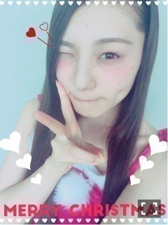
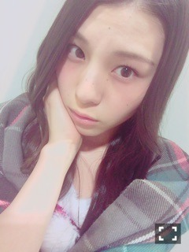
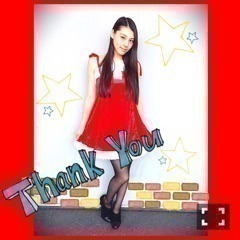
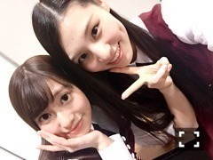
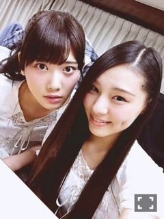

| 2015/12 31 Thu | リセットさせてもらいます_( ．．*)vol.58 |
みなさんこんばんはー！
さがらいおりです！

今年最後の握手会は
いおりサンタでしたー♪♪
5部
ウェーブ巻き

あんまり分からないかな、

全身撮った時は
まだ髪の毛のセットしてなくて、
最後の握手会だったから
遠征の方も多かった気がする！
5部だと時間が遅いから
帰らなきゃって方もいるだろうから
もっとたくさん
みなさんとの時間を増やせるように
頑張りますね＞＜
握手会楽しいしヾ(＠⌒ー⌒＠)ノ
ぜひまた来て下さい♪♪
年越したらすぐ握手会あるし！
待ってます♪♪
全握は玲香さんとでした！

玲香さんとのペア楽しかった♪♪
玲香さんも優しかったし
ファンの皆さんも優しくて
安心して握手出来ました！！
また機会があったら
よろしくお願いします
ありがとうございましたm(_ _)m
今年は
「命は美しい」で選抜入りから始まって
選抜期間は本当に色んな事を学んだり
体験したりして
毎日が新鮮で楽しかったです(｡> <｡)
来年も色々な体験が出来たらいいな
Soup.さんとminiさんに
モデルとして雑誌に出させて頂いたのも
東北ドリームコレクションで
初めてランウェイ歩いたのも
とっても嬉しかったし、
みり愛と琴子と3人で
Ｇザ・テレビジョンの裏表紙を
飾らせて頂いたのも
嬉しかったなーヾ(＠⌒ー⌒＠)ノ
ホントに今年は
振り返るといい事が
たくさんあったなぁと思います(｡> <｡)
アンダーライブで
目標だった武道館でのライブができたのも
すごい嬉しかったなぁ！

あと、
13thの握手会の残りが
完売してるのも私的にはすごい嬉しいの♪♪
1部だけだし
まだまだだとは思ってるけど
初めましての方が握手に来てくれるようになったり
ライブで手振り返してくれたり
そういった事が
すごい嬉しいの♪♪
来年はまた3部制に戻れるように
頑張ります！！
あと、また
お笑い関連のお仕事もしたいし
何よりモデルのお仕事を
今年よりもたくさん出来たらいいな
って思いますヾ(＠⌒ー⌒＠)ノ
 UTB 発売中
UTB 発売中
2期生で
カワイイ キレイ
に分かれて撮ってもらいました！
BLT 発売中
こちらは2期生全員で
パジャマで撮影しました♪♪
写真載せられないから
今度載せますね＞＜
FLASHスペシャル 発売中
こちらも2期生全員載ってます♪♪
1人1ページずつ載ってますヾ(＠⌒ー⌒＠)ノ
インタビューも見てね！
よろしくお願いしますm(_ _)m
紅白歌合戦
絶対見て下さいねー！！
では
今年一年ありがとうございました、
来年もよろしくお願いいたします☆
良いお年を
i o r i .

コメント(243)
2015/12/31 17:18